Gallery
 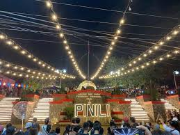
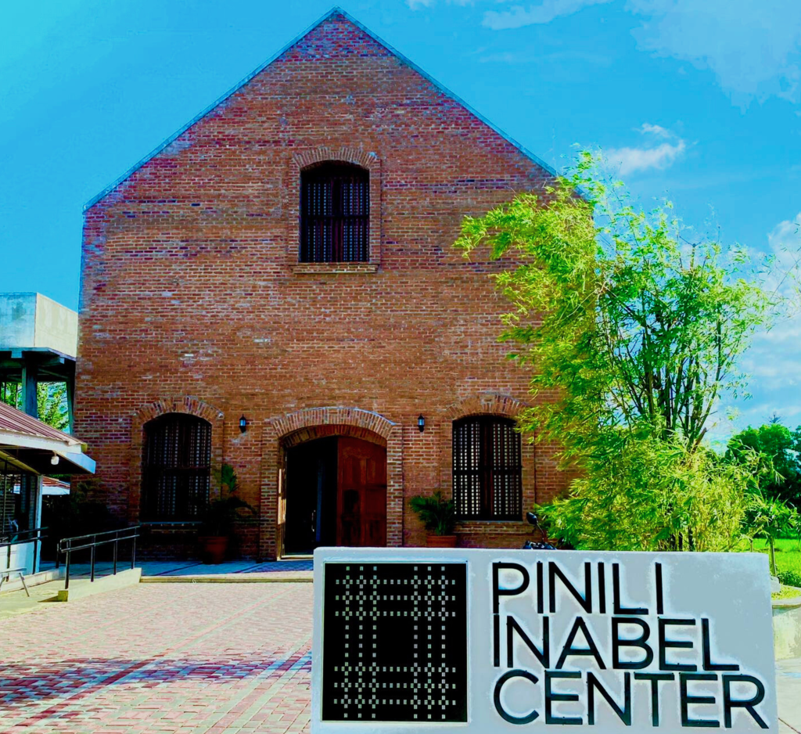
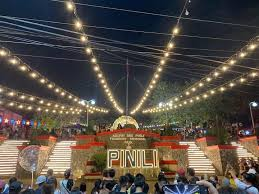
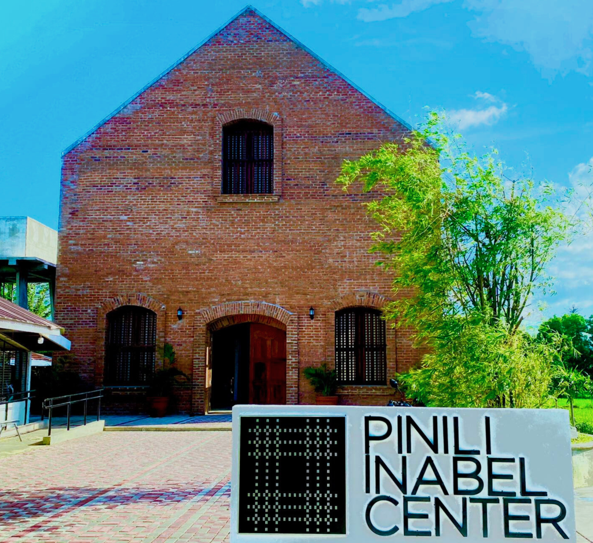
 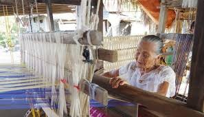
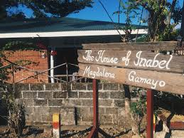
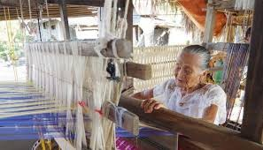
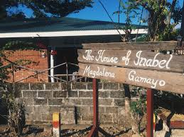
Celebrate the pride of Pinili — a festival that weaves tradition, artistry, and community spirit.
Discover MoreWelcome to my website, where I explore the beauty and meaning of festivals. I am a student who is fascinated. Through my journey of learning and sharing, I hope to bring you closer to the spirit of this celebration of light, hope, and renewal.
Pinili proudly honors Magdalena Gamayo, a National Living Treasure whose weaving artistry inspires generations. Her Inabel craft preserves the timeless beauty of Ilocano tradition.
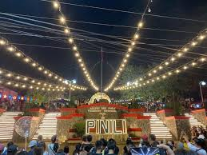
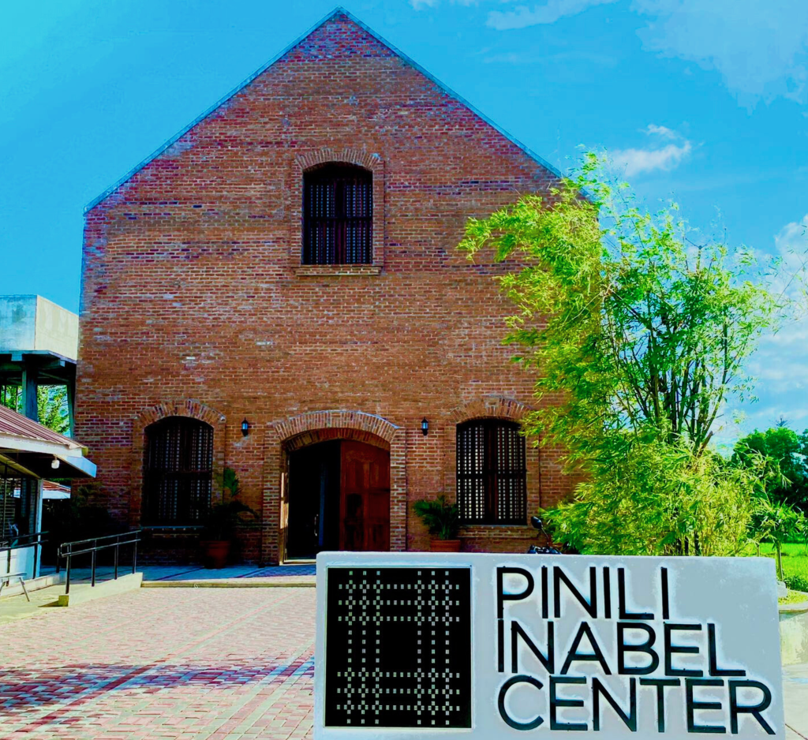
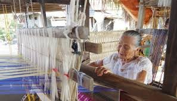
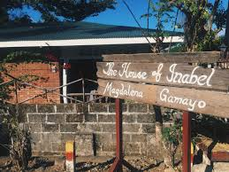
Inabel Fabric
Garlic Produce

Local Handicrafts